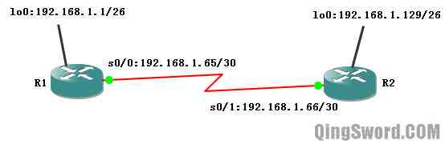
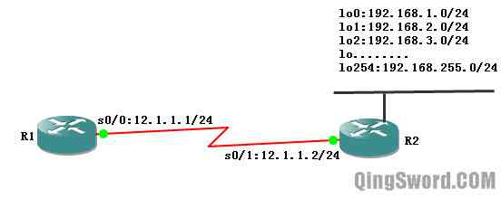
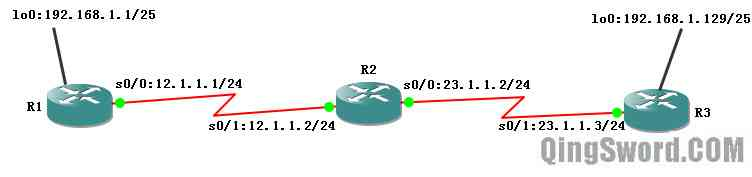
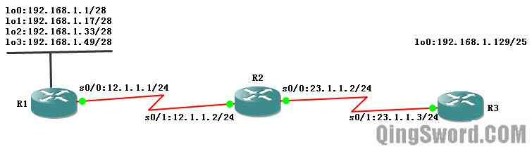
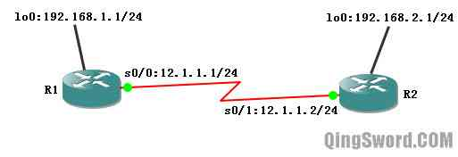

[CCNA图文笔记]-15-RIPv2协议详解
引言
这篇文章讲解RIPv2的增强特性，演示RIPv2对CIDR和VLSM的支持、RIPv2手动汇总、RIPv2验证以及与RIPv1的共存。
文章目录
- 0×1.RIPv2增强特性
- 0×2.RIPv2基本配置
- a.RIPv2支持VLSM实例
- b.RIPv2支持CIDR实例
- c.RIPv2手工汇总实例
- d.路由翻动
- 0×3.RIPv2高级配置
- a.RIPv2路由验证
- b.IPv1和RIPv2的共存
0×1.RIPv2增强特性
RIPv2与RIPv1的相同点：
也用跳数作为度量值，最大值为15；
也是距离矢量路由协议；
也容易产生路由环路，使用最大跳计数，水平分隔，触发更新，路由中毒和抑制定时器来防止路由环路；
也是周期更新，默认每30秒发送一次路由更新；
RIPv2的增强特性：
在路由更新中携带有子网掩码的路由选择信息，因此支持VLSM和CIDR；
提供身份验证功能，支持明文和MD5验证；
在路由更新信息中包含下一跳路由器的IP地址；
使用外部标记；
使用组播地址224.0.0.9代替RIPv1的广播更新；
可以关闭自动汇总，并支持手动汇总；
0×2.RIPv2基本配置
Router(config)#router rip /*使用RIPv2，如果不使用这条命令默认是使用RIPv1*/ Router(config-router)#version 2 /*和RIPv1相同，都是宣告主类网络号*/ Router(config-router)#network 主类网络号
a.RIPv2支持VLSM实例
在上一篇关于RIPv1的缺陷中有涉及到下面这张拓扑的配置，现在使用RIPv2去配置，看看结果会有何不同：
R1配置：
R1(config)#int s 0/0 R1(config-if)#ip add 192.168.1.65 255.255.255.252 R1(config-if)#no shut R1(config-if)#int lo0 R1(config-if)#ip add 192.168.1.1 255.255.255.192 R1(config-if)#no shut R1(config-if)#router rip R1(config-router)#version 2 R1(config-router)#net 192.168.1.0 R1(config-router)#end
R2配置：
R2(config)#int s 0/1 R2(config-if)#ip add 192.168.1.66 255.255.255.252 R2(config-if)#no shut R2(config-if)#int lo 0 R2(config-if)#ip add 192.168.1.129 255.255.255.192 R2(config-if)#no shut R2(config-if)#router rip R2(config-router)#ver 2 R2(config-router)#net 192.168.1.0 R2(config-router)#end
在R1上查看路由表并测试连通性：
/*可以看到R1支持VLSM*/ R1#show ip route 192.168.1.0/24 is variably subnetted, 3 subnets, 2 masks C 192.168.1.64/30 is directly connected, Serial0/0 C 192.168.1.0/26 is directly connected, Loopback0 R 192.168.1.128/26 [120/1] via 192.168.1.66, 00:00:01, Serial0/0 /*ping R2的回环接口，成功*/ R1#ping 192.168.1.129 !!!!!
通过Debug调试RIPv2查看输出：
R1#debug ip rip RIP protocol debugging is on R1# *Mar 1 00:22:31.687: RIP: sending v2 update to 224.0.0.9 via Serial0/0 (192.168.1.65) *Mar 1 00:22:31.687: RIP: build update entries *Mar 1 00:22:31.687: 192.168.1.0/26 via 0.0.0.0, metric 1, tag 0 R1# *Mar 1 00:22:52.391: RIP: received v2 update from 192.168.1.66 on Serial0/0 *Mar 1 00:22:52.391: 192.168.1.128/26 via 0.0.0.0 in 1 hops R1#u all All possible debugging has been turned off R1# /* * 从输出可以看到，发送和接收的版本均为RIPv2(sending v2、received v2) * 发送更新分组使用的是组播地址"update to 224.0.0.9" * 发送和接收的更新分组中携带了子网掩码长度"/26" * 发送的更新分组中使用了路由标记"tag 0" */
b.RIPv2支持CIDR实例
如下图所示，假设R2上面有多个192.168.*.0/24网络，可以在RIPv2中以CIDR的方式把路由宣告出去；
R1配置：
R1(config)#int s 0/0 R1(config-if)#ip add 12.1.1.1 255.255.255.0 R1(config-if)#no shut R1(config-if)#router rip R1(config-router)#ver 2 R1(config-router)#net 12.0.0.0 R1(config-router)#end
R2配置：
/*R2上配置了4个回环接口*/ R2(config)#int s 0/1 R2(config-if)#ip add 12.1.1.2 255.255.255.0 R2(config-if)#no shut R2(config-if)#int lo 0 R2(config-if)#ip add 192.168.1.1 255.255.255.0 R2(config-if)#no shut R2(config-if)#int lo 1 R2(config-if)#ip add 192.168.2.1 255.255.255.0 R2(config-if)#no shut R2(config-if)#int lo 2 R2(config-if)#ip add 192.168.3.1 255.255.255.0 R2(config-if)#no shut R2(config-if)#int lo 3 R2(config-if)#ip add 192.168.4.1 255.255.255.0 R2(config-if)#no shut R2(config-if)#exit /*生成一条静态路由192.168.0.0/16*/ R2(config)#ip route 192.168.0.0 255.255.0.0 null 0 R2(config)#router rip R2(config-router)#ver 2 R2(config-router)#net 12.0.0.0 /*将静态路由重发布出去*/ R2(config-router)#redistribute static R2(config)#end
这个时候在R1上查看路由表，就能看到R2重发布过来的超网路由：
/*如果使用的是RIPv1，就不会看到192.168.0.0/16这条超网信息，因为RIPv2不支持CIDR*/ R1#show ip route 12.0.0.0/24 is subnetted, 1 subnets C 12.1.1.0 is directly connected, Serial0/0 R 192.168.0.0/16 [120/1] via 12.1.1.2, 00:00:14, Serial0/0
c.RIPv2手工汇总实例
RIPv1和RIPv2都会在主类网络的边界汇总，区别在于RIPv2的自动汇总可以关闭，并支持手工汇总。
利用RIPv2完成下面配置，在关闭自动汇总前和RIPv1路由表结果一样，关闭自动汇总后RIPv2就能很好的支持不连续的子网了：
R1配置：
R1(config)#int s 0/0 R1(config-if)#ip add 12.1.1.1 255.255.255.0 R1(config-if)#no shut R1(config-if)#int lo 0 R1(config-if)#ip add 192.168.1.1 255.255.255.128 R1(config-if)#no shut R1(config-if)#router rip R1(config-router)#ver 2 /*使用RIPv2*/ R1(config-router)#no auto-summary /*关闭自动汇总*/ R1(config-router)#net 192.168.1.0 R1(config-router)#net 12.0.0.0 R1(config-router)#end
R2配置：
R2(config)#int s 0/1 R2(config-if)#ip add 12.1.1.2 255.255.255.0 R2(config-if)#no shut R2(config-if)#int s 0/0 R2(config-if)#ip add 23.1.1.2 255.255.255.0 R2(config-if)#no shut R2(config-if)#router rip R2(config-router)#ver 2 R2(config-router)#no auto-summary R2(config-router)#net 12.0.0.0 R2(config-router)#net 23.0.0.0 R2(config-router)#end
R3配置：
R3(config)#int s 0/1 R3(config-if)#ip add 23.1.1.3 255.255.255.0 R3(config-if)#no shut R3(config-if)#int lo 0 R3(config-if)#ip add 192.168.1.129 255.255.255.128 R3(config-if)#no shut R3(config-if)#router rip R3(config-router)#ver 2 R3(config-router)#no auto R3(config-router)#net 23.0.0.0 R3(config-router)#net 192.168.1.0 R3(config-router)#end
配置完成后在R1/R2/R3上分别查看路由表:
R1#show ip route 23.0.0.0/24 is subnetted, 1 subnets R 23.1.1.0 [120/1] via 12.1.1.2, 00:00:11, Serial0/0 12.0.0.0/24 is subnetted, 1 subnets C 12.1.1.0 is directly connected, Serial0/0 192.168.1.0/25 is subnetted, 2 subnets C 192.168.1.0 is directly connected, Loopback0 R 192.168.1.128 [120/2] via 12.1.1.2, 00:00:11, Serial0/0 R2#show ip route 23.0.0.0/24 is subnetted, 1 subnets C 23.1.1.0 is directly connected, Serial0/0 12.0.0.0/24 is subnetted, 1 subnets C 12.1.1.0 is directly connected, Serial0/1 192.168.1.0/25 is subnetted, 2 subnets R 192.168.1.0 [120/1] via 12.1.1.1, 00:00:15, Serial0/1 R 192.168.1.128 [120/1] via 23.1.1.3, 00:00:10, Serial0/0 R3#show ip route 23.0.0.0/24 is subnetted, 1 subnets C 23.1.1.0 is directly connected, Serial0/1 12.0.0.0/24 is subnetted, 1 subnets R 12.1.1.0 [120/1] via 23.1.1.2, 00:00:26, Serial0/1 192.168.1.0/25 is subnetted, 2 subnets R 192.168.1.0 [120/2] via 23.1.1.2, 00:00:26, Serial0/1 C 192.168.1.128 is directly connected, Loopback0
从三个路由的路由表输出，进一步证实了RIPv2关闭总汇后能够支持不连续的子网。但同时也带来一个问题，路由表变大了，如果R1上面有多个接口属于不同子网，那么R1将向其他路由通告这些接口所处的子网，下面这个实例将演示如何进行手动汇总来减小路由表的大小，拓扑如下图所示：
首先不使用手动汇总，配置各路由:
R1配置：
R1(config)#int s 0/0 R1(config-if)#ip add 12.1.1.1 255.255.255.0 R1(config-if)#no shut R1(config-if)#int lo0 R1(config-if)#ip add 192.168.1.1 255.255.255.240 R1(config-if)#no shut R1(config-if)#int lo1 R1(config-if)#ip add 192.168.1.17 255.255.255.240 R1(config-if)#no shut R1(config-if)#int lo 2 R1(config-if)#ip add 192.168.1.33 255.255.255.240 R1(config-if)#no shut R1(config-if)#int lo 3 R1(config-if)#ip add 192.168.1.49 255.255.255.240 R1(config-if)#no shut R1(config-if)#router rip R1(config-router)#no auto R1(config-router)#ver 2 R1(config-router)#net 12.0.0.0 R1(config-router)#net 192.168.1.0 R1(config-router)#end
R2配置：
R2(config)#int s 0/1 R2(config-if)#ip add 12.1.1.2 255.255.255.0 R2(config-if)#no shut R2(config-if)#int s 0/0 R2(config-if)#ip add 23.1.1.2 255.255.255.0 R2(config-if)#no shut R2(config-if)#router rip R2(config-router)#ver 2 R2(config-router)#no auto R2(config-router)#net 12.0.0.0 R2(config-router)#net 23.0.0.0 R2(config-router)#end
R3配置：
R3(config)#int s 0/1 R3(config-if)#ip add 23.1.1.3 255.255.255.0 R3(config-if)#no shut R3(config-if)#int lo 0 R3(config-if)#ip add 192.168.1.129 255.255.255.128 R3(config-if)#no shut R3(config-if)#router rip R3(config-router)#ver 2 R3(config-router)#no auto R3(config-router)#net 192.168.1.0 R3(config-router)#net 23.0.0.0 R3(config-router)#end
配置完成后，查看一下R3的路由表：
R3#show ip route 23.0.0.0/24 is subnetted, 1 subnets C 23.1.1.0 is directly connected, Serial0/1 12.0.0.0/24 is subnetted, 1 subnets R 12.1.1.0 [120/1] via 23.1.1.2, 00:00:24, Serial0/1 192.168.1.0/24 is variably subnetted, 5 subnets, 2 masks R 192.168.1.32/28 [120/2] via 23.1.1.2, 00:00:24, Serial0/1 R 192.168.1.48/28 [120/2] via 23.1.1.2, 00:00:24, Serial0/1 R 192.168.1.0/28 [120/2] via 23.1.1.2, 00:00:24, Serial0/1 R 192.168.1.16/28 [120/2] via 23.1.1.2, 00:00:26, Serial0/1 C 192.168.1.128/25 is directly connected, Loopback0 /*R3上学到了R1上的4条路由*/
下面在R1的s0/0接口上使用手动汇总：
注意！汇总是在路由的外出接口上面做的，如果有多条外出接口，就要在每个接口上执行手动汇总。
/*在R1 s0/0接口上配置汇总*/ R1(config)#int s 0/0 R1(config-if)#ip summary-address rip 192.168.1.0 255.255.255.192 /*等待R3收敛后(差不多要3～4分钟左右)，查看R3的路由表，就只能看到R1汇总后的一条路由条目了*/ R3#show ip route 23.0.0.0/24 is subnetted, 1 subnets C 23.1.1.0 is directly connected, Serial0/1 12.0.0.0/24 is subnetted, 1 subnets R 12.1.1.0 [120/1] via 23.1.1.2, 00:00:15, Serial0/1 192.168.1.0/24 is variably subnetted, 2 subnets, 2 masks R 192.168.1.0/26 [120/2] via 23.1.1.2, 00:00:15, Serial0/1 C 192.168.1.128/25 is directly connected, Loopback0
d.路由翻动
当路由的接口在"UP"和"DOWN"之间快速变换时，就会产生路由翻动，而路由汇总除了可以减小路由表大小，还能有效的将上游路由从路由翻动问题中隔离出来；比如在上面这个实例中，没使用手动汇总前，不停的开启关闭R1上的loopback 0就会造成R2和R3不停的接收新的路由更新，它们的处理器将不停的工作，影响网络性能；当使用汇总后，虽然R1的直连路由不停的发生变化，但是汇总路由没有发生任何变化，所以R2和R3也不会时不时的收到lo0的网络不可达或可达的更新了。
0×3.RIPv2高级配置
a.RIPv2路由验证
使用下面这个拓扑来完成RIPv2路由验证实验：
R1配置：
R2(config)#int lo 0 R2(config-if)#ip add 192.168.1.1 255.255.255.0 R2(config-if)#no shut R2(config-if)#int s 0/0 R2(config-if)#ip add 12.1.1.1 255.255.255.0 R2(config-if)#no shut R2(config-if)#router rip R2(config-router)#net 12.0.0.0 R2(config-router)#net 192.168.1.0 R2(config-router)#version 2 R2(config-router)#exit R2(config)#key chain test1 /*创建密钥链test1*/ R2(config-keychain)#key 1 /*配置密钥链中的key 1*/ R2(config-keychain-key)#key-string ccna1 /*配置密码串*/ R2(config-keychain-key)#end R2#conf t R2(config)#int s 0/0 /*在与R2相连的串口中配置使用密钥链test1进行验证*/ R2(config-if)#ip rip authentication key-chain test1 R2(config-if)#ip rip authentication mode md5 /*使用MD5验证*/ R2(config-if)#end /* * 验证模式分为两种，一种是text明文验证，一种是md5验证，本实验使用了md5验证 * 另外，两端使用的密钥链中的密码串必须相同，并且验证模式也要相同，才能验证成功。 */
R2配置：
R2(config)#int s 0/1 R2(config-if)#ip add 12.1.1.2 255.255.255.0 R2(config-if)#no shut R2(config-if)#int lo 0 R2(config-if)#ip add 192.168.2.1 255.255.255.0 R2(config-if)#no shut R2(config-if)#router rip R2(config-router)#version 2 R2(config-router)#net 12.0.0.0 R2(config-router)#net 192.168.2.0 R2(config-router)#exit /*暂时不执行下面的配置，大家可以查看下此时R1和R2是否可以通过RIP学习到对方路由*/ R2(config)#key chain test2 /*test2是密钥名，只起到标识作用*/ R2(config-keychain)#key 1 R2(config-keychain-key)#key-string ccna1 /*密钥字符串"ccna1"必须和R1相同*/ R2(config-keychain-key)#end R2#conf t R2(config)#int s 0/1 R2(config-if)#ip rip authentication key-chain test2 R2(config-if)#ip rip authentication mode md5 /*验证模式也必须相同*/ R2(config-if)#end
可以将R2的密钥字符串配置成和R1不同的字符，或者将R2改成text明文验证，然后开启"debug ip rip"查看输出，将会看(invalid authentication)验证失败的消息。
b.IPv1和RIPv2的共存
利用上面的RIPv2路由验证实验的拓扑图来完成下面的RIPv1和RIPv2共存的实验，实验之前先将这两台路由器重新关闭再启动，清空它们的配置：
R1配置：
R1(config)#int s 0/0 R1(config-if)#ip add 12.1.1.1 255.255.255.0 R1(config-if)#no shut R1(config-if)#int lo0 R1(config-if)#ip add 192.168.1.1 255.255.255.0 R1(config-if)#no shut R1(config-if)#router rip /*并没有启动RIPv2，默认使用RIPv1*/ R1(config-router)#net 12.0.0.0 R1(config-router)#net 192.168.1.0 R1(config-router)#end
R2配置：
R2(config)#int s 0/1 R2(config-if)#ip add 12.1.1.2 255.255.255.0 R2(config-if)#no shut R2(config-if)#int lo0 R2(config-if)#ip add 192.168.2.1 255.255.255.0 R2(config-if)#no shut R2(config-if)#router rip R2(config-router)#version 2 /*开启了RIPv2*/ R2(config-router)#net 12.0.0.0 R2(config-router)#net 192.168.2.0 R2(config-router)#end
分别查看R1、R2的路由表：
/*发现R1上面能学习到R2上面的回环接口*/ R1#show ip route 12.0.0.0/24 is subnetted, 1 subnets C 12.1.1.0 is directly connected, Serial0/0 C 192.168.1.0/24 is directly connected, Loopback0 R 192.168.2.0/24 [120/1] via 12.1.1.2, 00:00:20, Serial0/0 /*R2上面什么都学不到，这是为什么呢？*/ R2#show ip route 12.0.0.0/24 is subnetted, 1 subnets C 12.1.1.0 is directly connected, Serial0/1 C 192.168.2.0/24 is directly connected, Loopback0
为什么R2学不到任何R1的路由信息？分别查看R1和R2的协议情况：
/* * 可以看到R1"send version 1, receive any version" * 也就是说，R1发送版本1的更新，接收任何版本（V1，V2）的更新， * R1配置的是RIPv1，而R2配置的是RIPv2，当R2发送过来v2版本的更新时， * R1照样接收它，这就是R1为什么能学到R2的回环接口的原因。 */ R1#show ip protocols Default version control: send version 1, receive any version Interface Send Recv Triggered RIP Key-chain Serial0/0 1 1 2 Loopback0 1 1 2 /* * 而R2上面的RIPv2协议默认只能"send version 2, receive version 2" * 也就是发送版本2和接收版本2，R1发过来的版本1的更新直接被忽略了。 */ R2#show ip protocols Default version control: send version 2, receive version 2 Interface Send Recv Triggered RIP Key-chain Serial0/1 2 2 Loopback0 2 2
如果一端配置的是RIPv1，另一端配置的是RIPv2，可以通过下面的方法让它们通信；
在R1上的每个外出接口（如果有多个）上配置发送版本1和版本2的更新，或者在R2的外出接口上配置接收版本1和版本2的更新；
/*在运行RIPv1的一端，让它同时发送版本1和版本2的更新*/ R1(config)#int s 0/0 R1(config-if)#ip rip send version 1 2 /*或者在运行RIPv2的一端，让它同时接收版本1和版本2的更新*/ R2(config)#int s 0/1 R2(config-if)#ip rip receive version 1 2
这样，两端就都能学到对方的路由条目了。